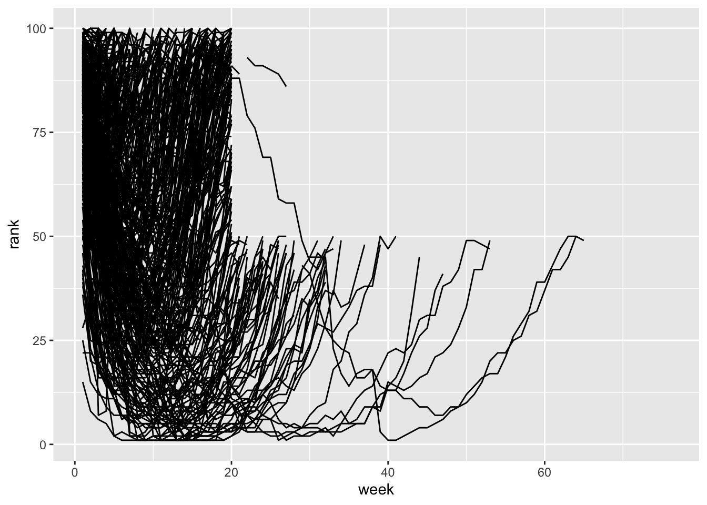
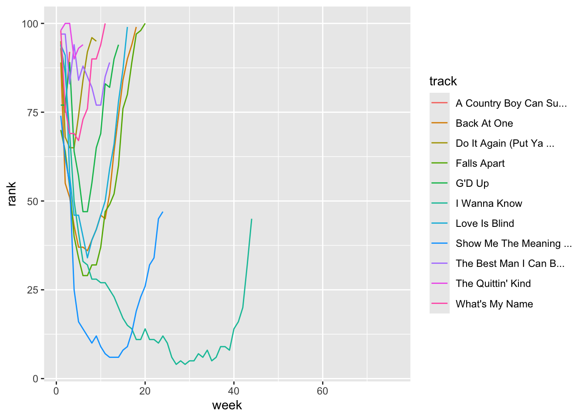

This module deals with “wide” versus “long” format data.
This module is my own attempt to explain the
pivot_longer() and pivot_wider() function in
the tidyr package. Here are a couple of other explainers on the same
topic:
https://tidyr.tidyverse.org/articles/pivot.html
https://tavareshugo.github.io/r-intro-tidyverse-gapminder/09-reshaping/index.html
Wide-format data is one in which each row is a subject/entity that is measured repeatedly, and each measurement appears on different columns. This may happen if you want to take repeated measurements at one point in time (e.g., if you want to take an average as a more reliable point measure), or if you take a measurement of the same individual at different points in time (e.g., to measure growth, immune response, or anything else that can change across time).
Long-format data is one in which each row is an observation. So if a subject is measured multiple times, those will show up as multiple rows–one for each time the subject was measured.
The ggplot() function cannot take wide-format data to plot multiple variables!
pivot_longer()In this module, we will be using the tidyr package
within the tidyverse suite of packages
library(tidyverse)The billboard data is a prime example of wide-format
data because it lists the rankings of a song for each week in separate
columns.
billboard## # A tibble: 317 × 79
## artist track date.entered wk1 wk2 wk3 wk4 wk5 wk6 wk7 wk8
## <chr> <chr> <date> <dbl> <dbl> <dbl> <dbl> <dbl> <dbl> <dbl> <dbl>
## 1 2 Pac Baby… 2000-02-26 87 82 72 77 87 94 99 NA
## 2 2Ge+her The … 2000-09-02 91 87 92 NA NA NA NA NA
## 3 3 Doors D… Kryp… 2000-04-08 81 70 68 67 66 57 54 53
## 4 3 Doors D… Loser 2000-10-21 76 76 72 69 67 65 55 59
## 5 504 Boyz Wobb… 2000-04-15 57 34 25 17 17 31 36 49
## 6 98^0 Give… 2000-08-19 51 39 34 26 26 19 2 2
## 7 A*Teens Danc… 2000-07-08 97 97 96 95 100 NA NA NA
## 8 Aaliyah I Do… 2000-01-29 84 62 51 41 38 35 35 38
## 9 Aaliyah Try … 2000-03-18 59 53 38 28 21 18 16 14
## 10 Adams, Yo… Open… 2000-08-26 76 76 74 69 68 67 61 58
## # ℹ 307 more rows
## # ℹ 68 more variables: wk9 <dbl>, wk10 <dbl>, wk11 <dbl>, wk12 <dbl>,
## # wk13 <dbl>, wk14 <dbl>, wk15 <dbl>, wk16 <dbl>, wk17 <dbl>, wk18 <dbl>,
## # wk19 <dbl>, wk20 <dbl>, wk21 <dbl>, wk22 <dbl>, wk23 <dbl>, wk24 <dbl>,
## # wk25 <dbl>, wk26 <dbl>, wk27 <dbl>, wk28 <dbl>, wk29 <dbl>, wk30 <dbl>,
## # wk31 <dbl>, wk32 <dbl>, wk33 <dbl>, wk34 <dbl>, wk35 <dbl>, wk36 <dbl>,
## # wk37 <dbl>, wk38 <dbl>, wk39 <dbl>, wk40 <dbl>, wk41 <dbl>, wk42 <dbl>, …You can see that each subject (song) is measured repeatedly across time (i.e., ranking each week).
Let’s now convert this into a long-format, in which we have a column for “week” and then the rank of that song for that week in a column called “rank”:
billboard %>% pivot_longer(cols=starts_with("wk"), names_to="week", values_to="rank")## # A tibble: 24,092 × 5
## artist track date.entered week rank
## <chr> <chr> <date> <chr> <dbl>
## 1 2 Pac Baby Don't Cry (Keep... 2000-02-26 wk1 87
## 2 2 Pac Baby Don't Cry (Keep... 2000-02-26 wk2 82
## 3 2 Pac Baby Don't Cry (Keep... 2000-02-26 wk3 72
## 4 2 Pac Baby Don't Cry (Keep... 2000-02-26 wk4 77
## 5 2 Pac Baby Don't Cry (Keep... 2000-02-26 wk5 87
## 6 2 Pac Baby Don't Cry (Keep... 2000-02-26 wk6 94
## 7 2 Pac Baby Don't Cry (Keep... 2000-02-26 wk7 99
## 8 2 Pac Baby Don't Cry (Keep... 2000-02-26 wk8 NA
## 9 2 Pac Baby Don't Cry (Keep... 2000-02-26 wk9 NA
## 10 2 Pac Baby Don't Cry (Keep... 2000-02-26 wk10 NA
## # ℹ 24,082 more rowsWhat happened here?
The minimal arguments that are required in here are:
data: (self explanatory)cols: The columns that we want to collapse into a
single column. Here, we want all the columns that start with “wk”, which
contain the ranking of that song in that week. tidyverse has a friendly
function called starts_with() that we use here. An
alternative way to do this would be to exclude all the other
columns, which we could do with
-c(artist, track, date.entered)names_to: The name of a new column that will contain
names of the columns that you collapsed. Here, naming this “week” makes
sense.values_to: The name of a new column that will have the
values for each ID x names_from combination. In this case, this is
“rank”The next step would be to change the “week” column to be a number
(1,2,3,…), rather than character that says “wk1”, “wk2”, etc. We can do
this by using str_replace() from the stringr package. (More
on that in the text
parsing module).
Let’s save the long-format version of the billboard data:
bb_long=billboard %>% pivot_longer(cols=starts_with("wk"), names_to="week", values_to="rank")Then, let’s modify the “week” column by:
removing the characters “wk” from all values using
str_replace()
then telling R that the remaining character should be a number
using as.numeric()
bb_long=bb_long %>% mutate(week=as.numeric(str_replace(week, "wk", "")))ggplot(bb_long, aes(x=week, y=rank, group=track)) +
geom_line()## Warning: Removed 18723 rows containing missing values or values outside the scale range
## (`geom_line()`). Since this is messy, let’s filter the data to songs that first entered the rankings in the first 3 weeks of 2000.
ggplot(bb_long %>% filter(date.entered>=ymd("2000-01-01") & date.entered<=ymd("2000-01-21")), aes(x=week, y=rank, color=track)) +
geom_line()## Warning: Removed 659 rows containing missing values or values outside the scale range
## (`geom_line()`).
pivot_wider()We can then revert back to the wide-format version this way:
bb_long %>% pivot_wider(names_from = "week", values_from = "rank")## # A tibble: 317 × 79
## artist track date.entered `1` `2` `3` `4` `5` `6` `7` `8`
## <chr> <chr> <date> <dbl> <dbl> <dbl> <dbl> <dbl> <dbl> <dbl> <dbl>
## 1 2 Pac Baby… 2000-02-26 87 82 72 77 87 94 99 NA
## 2 2Ge+her The … 2000-09-02 91 87 92 NA NA NA NA NA
## 3 3 Doors D… Kryp… 2000-04-08 81 70 68 67 66 57 54 53
## 4 3 Doors D… Loser 2000-10-21 76 76 72 69 67 65 55 59
## 5 504 Boyz Wobb… 2000-04-15 57 34 25 17 17 31 36 49
## 6 98^0 Give… 2000-08-19 51 39 34 26 26 19 2 2
## 7 A*Teens Danc… 2000-07-08 97 97 96 95 100 NA NA NA
## 8 Aaliyah I Do… 2000-01-29 84 62 51 41 38 35 35 38
## 9 Aaliyah Try … 2000-03-18 59 53 38 28 21 18 16 14
## 10 Adams, Yo… Open… 2000-08-26 76 76 74 69 68 67 61 58
## # ℹ 307 more rows
## # ℹ 68 more variables: `9` <dbl>, `10` <dbl>, `11` <dbl>, `12` <dbl>,
## # `13` <dbl>, `14` <dbl>, `15` <dbl>, `16` <dbl>, `17` <dbl>, `18` <dbl>,
## # `19` <dbl>, `20` <dbl>, `21` <dbl>, `22` <dbl>, `23` <dbl>, `24` <dbl>,
## # `25` <dbl>, `26` <dbl>, `27` <dbl>, `28` <dbl>, `29` <dbl>, `30` <dbl>,
## # `31` <dbl>, `32` <dbl>, `33` <dbl>, `34` <dbl>, `35` <dbl>, `36` <dbl>,
## # `37` <dbl>, `38` <dbl>, `39` <dbl>, `40` <dbl>, `41` <dbl>, `42` <dbl>, …So, what happened here? The minimal arguments that are required in here are:
data: is bb_long, forwarded by the
%>%names_from: The column that you want to expand into
different columns. In this case, it is “age” because you want to see the
heights of each tree at different ages as different columns.values_from: The column that will have the values for
each ID x names_from combination. In this case, this is “height”Go to the Worked Example on “Wrangling World Bank Data”